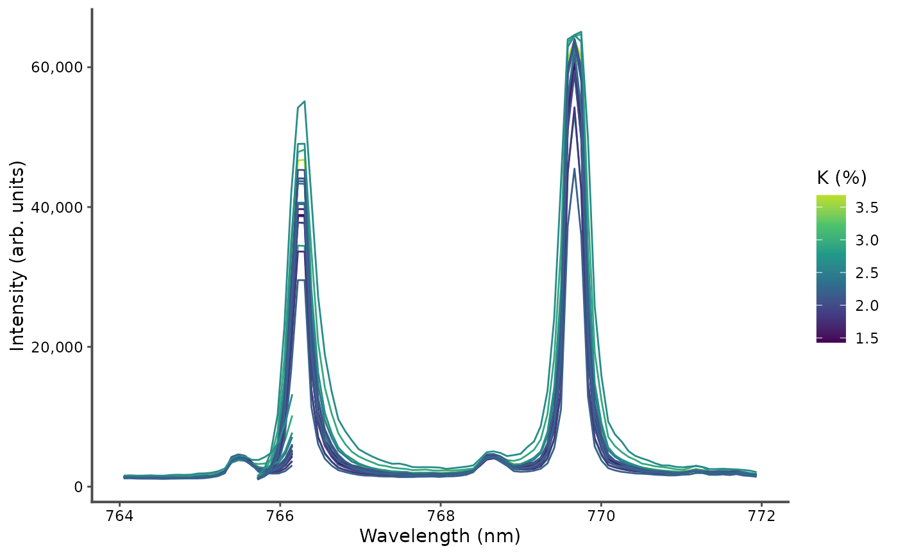
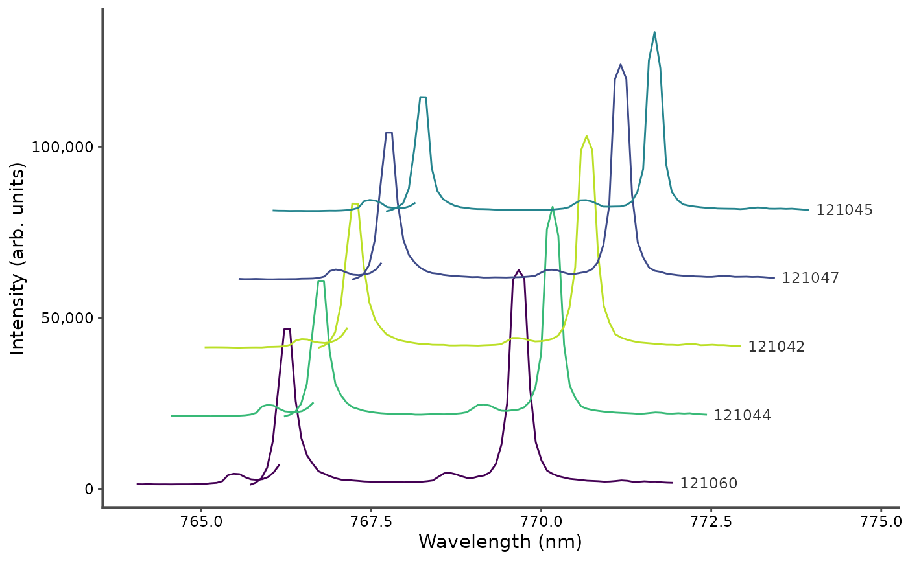
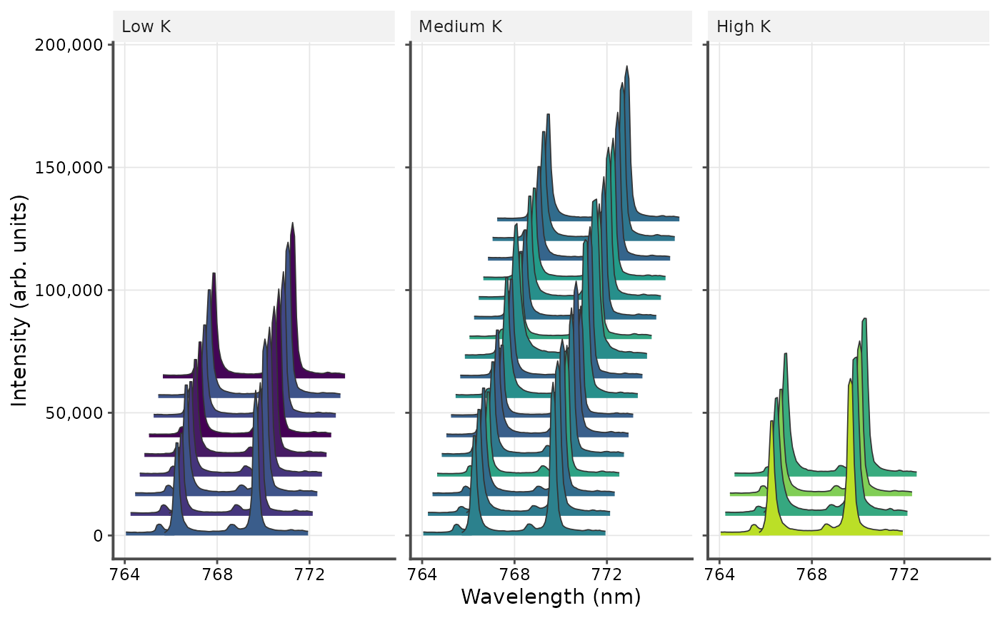
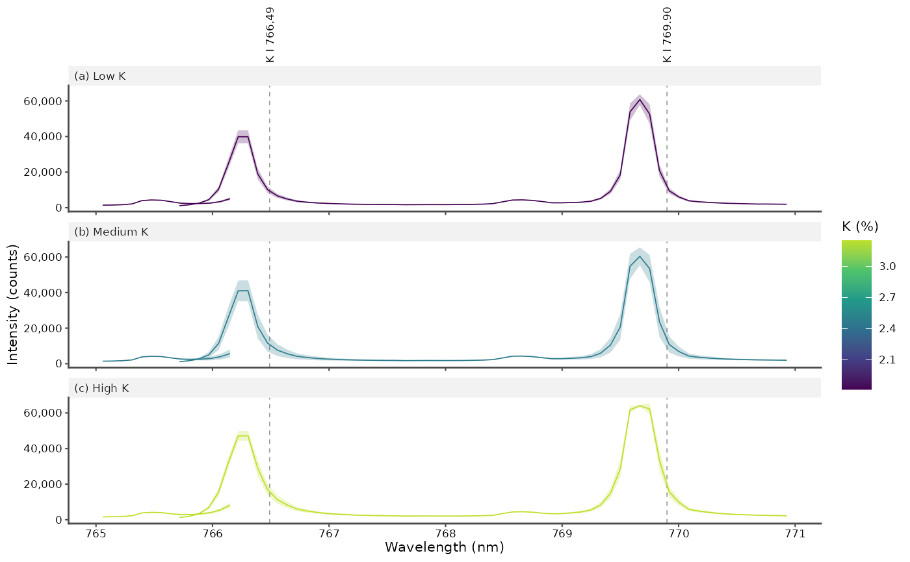

Spectrum plots are commonly x–y plots in which the x-axis represents the wavelength and the y-axis represents intensity of a spectrum's signal. The function allows to plot a spectrum or several spectra in a single plot, identified either by an id (for example, the samples or spectra id) or by a target variable (for example, the concentration of a chemical element). The spectra can be split into panels by a grouping variable, summarized by their mean or median, and labeled with the emission lines they show.
Usage
plot_spectra(
x,
id = NULL,
colvar = NULL,
.interactive = FALSE,
drop_na = FALSE,
offset = NULL,
panel = NULL,
layout = c("vertical", "horizontal"),
grid = FALSE,
color_as = c("line", "fill"),
legend = c("none", "right", "top", "bottom", "inside"),
legend_title = NULL,
xlab = "Wavelength (nm)",
ylab = "Intensity (arb. units)",
title = NULL,
lines = NULL,
palette = "viridis",
base_size = 11,
linewidth = 0.5,
xlim = NULL,
scales = c("fixed", "free_y"),
panel_tags = FALSE,
label_spectra = FALSE,
summary = c("none", "mean", "median"),
rasterize = FALSE
)Arguments
- x
data frame or tibble of the spectra.
- id
optional (
NULLby default). Column name of a factor variable that identified each spectrum.- colvar
optional (
NULLby default). Column name of a numeric variable to be display in color scale.- .interactive
optional (
FALSEby default). When set toTRUEenables interactive plot.- drop_na
Optional (
FALSEby default). Remove rows with NA intensity if drop_na isTRUE.- offset
Optional (
NULLby default). The offsets between successive spectra, to separate them: a number (vertical offset, in intensity units), or two numbersc(horizontal, vertical)(in nm and intensity units). The spectrum of rowiis shifted by(i - 1)times the offsets, so that the first one stays in place. Withpanel, the rows are counted in each panel, so that the first spectrum of every panel stays in place. Withsummary, the summary spectra are offset.- panel
Optional (
NULLby default). Column name of a grouping variable: the spectra of each group are drawn in a separate panel.- layout
The arrangement of the panels:
"vertical"(default), one above the other, or"horizontal", side by side. Ignored withoutpanel.- grid
A logical: draw grid lines at the major breaks of the axes (
FALSE, default).- color_as
How the colors of
colvar(or ofid, withoutcolvar) are shown: as the color of the lines ("line", default), or as the fill of the area under each spectrum ("fill").- legend
The position of the legend of
colvar(a color bar) orid:"none"(default),"right","top","bottom", or"inside"(the top right corner of the plot).- legend_title
The title of the legend. Default is the name of
colvar(orid); give it with units, such as"K (%)".- xlab, ylab
The axis titles. Default are
"Wavelength (nm)"and"Intensity (arb. units)".- title
The plot title. A long title is split into a title and a subtitle.
- lines
Optional table of emission lines, such as returned by
libs_lines(): a data frame with the columnsspecies(such as"K I") andwavelength(nm). Each line within the wavelength range is marked and labeled (see Details).- palette
The colors of
colvarorid: the name of a viridis palette ("viridis", default,"magma","inferno","plasma","cividis","rocket","mako"or"turbo"), all readable by colorblind readers and in grayscale except"turbo", or a vector of at least two colors, interpolated forcolvarand for the levels ofidwhen there are fewer colors than levels.- base_size
The size of the text, in points. Default is 11; use the text size of the journal (often 7 to 9 points) for a figure saved at its printed size. The axis lines and labels scale with it.
- linewidth
The width of the spectra lines. Default is 0.5; about 0.3 suits small figures.
- xlim
Optional wavelength range
c(from, to), in nm: only the channels in this range are drawn.- scales
"fixed"(default), the same intensity axis for all panels, or"free_y", an intensity axis fitted to each panel.A logical: tag the panels (a), (b), (c), ... before their labels (
FALSE, default).- label_spectra
A logical: label each spectrum at its right end (
FALSE, default), with itsid, else its value ofcolvar, else its row number (or"Mean"/"Median"for summaries). Most useful for spectra stacked byoffset.- summary
"none"(default), each spectrum drawn;"mean", the mean spectrum of each group with a band of plus or minus one standard deviation; or"median", the median spectrum of each group with a band of the first to third quartiles (see Details).- rasterize
FALSE(default),TRUE, or a resolution in dpi: draw the spectra as an image, of 300 dpi withTRUE, within an otherwise vector plot (see Details). Ignored for interactive plots.
Details
This function is based on the ggplot2 package, thus allowing users to easily
add or modify different components of the plot. Each row of x is drawn as
a separate line. All columns other than id, colvar and panel must be
named by their wavelength.
Filled spectra. With color_as = "fill", the area between each
spectrum and its baseline (zero intensity, shifted by offset) is filled,
with the spectrum drawn as a thin dark line. Overlaid spectra are filled
with translucent colors. Stacked spectra (with a vertical offset) are
filled with opaque colors and drawn from the back to the front (from the
top to the bottom of the stack), so that the front spectra hide the back
ones, as in a waterfall plot.
Detectors. The spectra are not drawn across the gaps between detectors (wavelength steps of more than 5 times the channel spacing), and the channels of overlapping detectors (where the wavelengths step back in column order) are drawn as separate lines, not joined in a zigzag.
Summaries. With summary = "mean", each group of spectra is drawn as
its mean spectrum, in a band of plus or minus one standard deviation; with
summary = "median", as its median spectrum, in a band from the first to
the third quartile. The groups are the panels and, within them, the values
of id; the color of colvar is then the mean of colvar in each group.
The band is not drawn with color_as = "fill".
Emission lines. Each line of lines within the wavelength range is
marked by a dashed vertical line, labeled with its species and wavelength
above the plot (above the top panels). Lines closer than 2% of the
wavelength range share a label, such as "Ca II 393.37, 396.85". The
markers are at the tabulated wavelengths: with a horizontal offset, they
match the first spectrum of each panel. Over a wide range, keep the
strongest lines, for example with the top or min_relative arguments of
libs_lines(), or labels become long.
Publication figures. Journals print figures about 85 mm wide for a
single column and 175 mm for a double column, with text of 7 to 9 points.
Make the plot at its printed size, with base_size set to the text size,
and save it with ggplot2::ggsave(), in a vector format (PDF or EPS) or
as a TIFF of 600 dpi, for example
ggsave("figure.pdf", p, width = 85, height = 65, units = "mm"). Many
long spectra make large and slow vector files: rasterize = TRUE draws
the spectra as an image within the plot, keeping the text, axes and
markers as vectors (this needs the ragg package).
See also
libs_lines() for the emission lines.
Examples
data(forageLIBS)
wl <- as.numeric(names(forageLIBS)[-(1:14)])
k_lines <- names(forageLIBS)[-(1:14)][wl > 764 & wl < 772]
# the K I resonance lines, colored by potassium content
plot_spectra(forageLIBS[1:20, c("K", k_lines)], colvar = K, legend = "right",
legend_title = "K (%)")

# five spectra stacked, each shifted up by 20000 counts and right by 0.5 nm,
# labeled at their right end
plot_spectra(forageLIBS[1:5, c("Measurement", k_lines)], id = Measurement,
offset = c(0.5, 20000), label_spectra = TRUE)

# one panel per potassium level, side by side, with the area under the
# spectra filled by potassium content and grid lines
spectra <- forageLIBS[1:30, c("K", k_lines)]
spectra$level <- cut(spectra$K, 3, labels = c("Low K", "Medium K", "High K"))
plot_spectra(spectra, colvar = K, panel = level, layout = "horizontal",
offset = c(0.2, 8000), color_as = "fill", grid = TRUE)

# a figure for a journal column: the mean spectrum of each potassium level,
# with the K I lines labeled (from libs_lines() in practice)
lines <- data.frame(species = "K I", wavelength = c(766.49, 769.90))
p <- plot_spectra(spectra, colvar = K, panel = level, summary = "mean",
lines = lines, panel_tags = TRUE, legend = "right",
legend_title = "K (%)", ylab = "Intensity (counts)",
base_size = 8, linewidth = 0.3, xlim = c(765, 771))
p

# ggplot2::ggsave("figure.pdf", p, width = 85, height = 90, units = "mm")